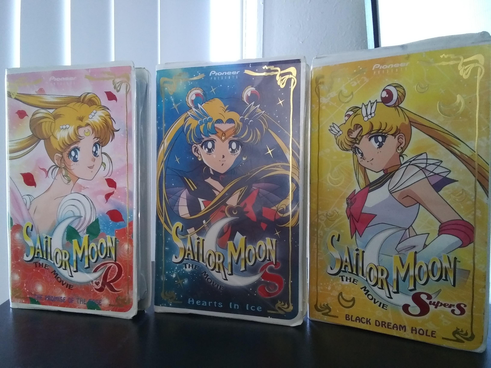

Manga
Sailor Moon comics were originally published in a monthly manga magazine targeted to females. The magazine was called Nakayoshi. But before this was Cody Name: Sailor V. A comic about Sailor V. This comic gained popularity which led to an offer to Naoko about a story surrounding a team of girls. So Naoko wrote about girls she wished she was friends with. Thus came Sailor Moon and the Sailor Scouts. Though in the United States, we just call the manga Sailor Moon, it is actually, Pretty Soldier(then later as Pretty Guardian) Sailor Moon. When the manga came to the United States, Tokyopop helped publish it and it also came out in American manga magazines like Mixxzin and Smile.
Anime Series
Sailor Moon hit tvs in Japan on TV Asahi from March 7th 1992 to February 8th 1997. It eventually came to the United States November 30th, 1994. However when it came to the United States, it needed to be Dubbed. Meaning, it needed the dialog to be in English. Also, American producers thought there was no way kids would relate to a show where the characters had japanese names. So they changed the names, changed relationships and censored several different parts of the show. The last season of Sailor Moon didn't originally make it to the United States because there was so much that the American producers felt needed sencored, that they simply did not air it instead. So.. now you're wondering. WHAT DID THEY CHANGE?
Sailor Moon's civillian name is Usagi. However in the US is became Serena. Sailor Jupiter's name is Makoto and was changed to Lita. Some names however remained the same but different spellings. Sailor Mar's japanes name is Rei. Her english name was Raye. Even one of Usagi's school friend's were changed from Naru to Molly. But like I said, names were only one of the things changed. Some episodes didn't make the cut. The factual reasons may be unknown, but there are some strong theories out there. In episode 2 (yes.. the 2nd episode), some boy's were under a spell, causing them to misbehave and flip up the skirt of their teacher. The moonies figure that's probably why this episode was nixxed.
Some other things that got sencored were scene's like Usagi in the bath. In the japanese version it shows a line of cleavage and a silhouette of her body in the water. However in the American version, they got rid of the line and silhouette. You will also find that in later episodes, when Sailor Uranus and Neptune appear, they tell other's that they are cousins. Very.. concerningly close cousins. When in reality they are simply two females who are in a romantic relationship. But claiming a lover as family isn't easy. So in other cases, they simply changed the gender as seen in Zoicite and Malachite (later changed to Kunzite). Zoicite is more femine in appearance and mannerisms and even though they are supposed to be a male, the original English dub decided it was better for Zoicite was presented to viewers as a female.
You might be thinking that's a lot of changes, and it was. This was the doing of DiC's and Cloverway's production. They also added at the end of each aired episode a segment called 'Sailor Moon Says..' which is basically the lesson of the day. Why should kids watch something simply for fun? There had to be a reason. A lesson. But with time, things would change. Production companies would learn that Naoko didn't intend Sailor Moon for a young audience. It wasn't raunchy, but it was supposed to be a little sexy. It was supposed to be transparant to sexuality. So eventually Viz Media would take control and re dub the series with correct names and relationships and ALL of the episodes we so rightly deserved access to.
"But wait.. I thought it was called Sailor Moon Crystal?" You're not wrong. You see, while some of us loved the anime.. it wasn't entirely true to the manga. A lot of fluff was added to the anime. A lot of stuff didn't exist that was in the manga. This had a lot of moonies up in arms. Sometimes, the power of the fans is nothing. But Sailor Moon has a large following. It is still known to be a very popular anime. So Sailor Moon was made again. Different art style, aiming to match the manga a bit more and a story line to follow the manga a bit more. This came out in 2014 and is to this day.. the United States is STILL waiting for that last season, even in Crystal.
Anime Movies
But wait! There's more! There was three Sailor Moon movies that released (we are not talking about Crystal). They do NOT follow the story of the anime. So.. you don't have to really watch them in any specific order. But, each movie sort of correlates to a season.
Sailor Moon R: The Promise of the Rose would be the first one. Since the Sailor Scouts are still in the first forms in this movie. Though if you watch this and the original series.. you're gonna notice a similar character. They are NOT the same. It's just a a little confusing. In the series, the Doom Tree Arc was fluff and filler. I'm sure the character was just sort of piggy backed into the movie or vice versa.
Sailor Moon S: Hearts In Ice. This is the next season, the next power up. Another big baddie is trying to incase the world in ice. A sick scientest believes in fairytales and a cat (Luna) is seen for the first time as a human. This movie gives fans a lot. If they hadn't read the manga, they'd be imagining what the other cat (Artemis) would look like as a human too. But actually.. they do have humanoid forms and this is seen in the manga and in Sailor Moon Crystal.
Sailor Moon Super S: Black Dream Hole. The scouts are again, a bit more powerful. Elf like beings are playing music in the streets to lull kids out of the beds so that their boss can suck the sweet dream energy out of them for all eternity. Sailor Moon has to decide save the kids or live in the romantic dream with her one true love always.
Live Action
So maybe you have heard of Sailor Moon. Maybe you've even watched it. Did you know there was a live action? No, I don't mean Netflix live action like One Piece. I mean.. stuffed animals as cats.. kind of like Powerangers way back when live action. It was released in 2003 and IMBD rates it as a 7.4/10 which isn't all that bad. There were a lot of changes to the live action story just as there are to every incarnation Sailor Moon has had. But that makes it all the more interesting to watch.
Musical
The musicals were often referred to as Sera Myu. A live action musical production on stage. The musicals have been wildly successful since their first on in 1993. From 1993 to 2013, the productions were produced by Bandai and from 2013 to current by Nelke Planning. Again, the reoccuring theme is that.. the story is a bit different than the manga. A bit different than the anime and movies and Live action. You'll only really know how if.. you watch and ready every little thing that is Sailor Moon.
Games
Where there is great media.. there is games to follow. Gameboys, Playstation, Sega and more. Sailor Moon games can be found. Fighting games and mobil games. Side scrolling games and arcade games. Puzzle games and roleplaying games. All of these mentioned are the of the video game category. There's also table top roleplaying games, board games, trading card games.Conclusion
Sailor Moon was wildly popular. Still is wildly popular. Do you want a novel? Done. Game? Done. Anime? Done. How about the original pilot that looks wildly different than what we know and love? DONE.